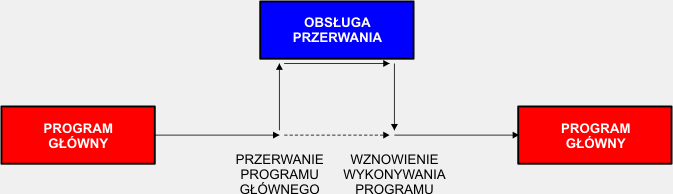
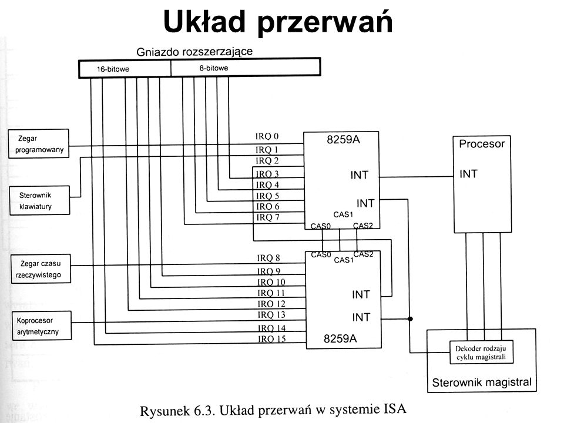

Przerwanie
Przerwanie (ang. interrupt) lub żądanie przerwania (ang. interrupt request, IRQ) – sygnał powodujący zmianę przepływu sterowania,
niezależnie od aktualnie wykonywanego programu. Pojawienie się przerwania powoduje wstrzymanie aktualnie wykonywanego programu
i wykonanie przez procesor kodu procedury obsługi przerwania (ang. interrupt handler). Procedura ta wykonuje czynności związane
z obsługą przerwania i na końcu wydaje instrukcję powrotu z przerwania, która powoduje powrót do programu realizowanego przed przerwaniem.
W informatyce przepływ sterowania oznacza kolejność, w jakiej pojedyncze wyrażenia lub instrukcje są wykonywane
w paradygmacie programowania imperatywnego.
Przerwania dzielą się na dwie grupy:
1. Sprzętowe:
a) Zewnętrzne – sygnał przerwania pochodzi z zewnętrznego układu obsługującego przerwania sprzętowe; przerwania te służą do komunikacji z urządzeniami zewnętrznymi,
np. z klawiaturą, napędami dysków itp.
b) Wewnętrzne, nazywane wyjątkami (ang. exceptions) – zgłaszane przez procesor dla sygnalizowania sytuacji wyjątkowych (np. dzielenie przez zero)
2. Programowe – z kodu programu wywoływana jest procedura obsługi przerwania; najczęściej wykorzystywane do komunikacji z systemem operacyjnym, który w procedurze
obsługi przerwania (np. w DOS 21h, Windows 2h, Linux x86 przerwanie 80h) umieszcza kod wywołujący odpowiednie funkcje systemowe w zależności od zawartości
rejestrów ustawionych przez program wywołujący, lub do komunikacji z oprogramowaniem wbudowanym jak procedury BIOS lub firmware.
Producenci procesorów część pozycji w tablicy wektorów przerwań rezerwują dla przerwań wewnętrznych. Pozostałe numery przerwań mogą być dowolnie wykorzystane przez
producentów systemów komputerowych i oprogramowania. Obsługiwanie większości przerwań (wszystkich lub wybranych numerów) można wstrzymać lub zablokować,
wyjątkiem są przerwania niemaskowalne.

Przerwanie
|
Przerwania Sprzętowe
|
Przerwania maskowalne i niemaskowalne
|
Kontroler przerwań
|
Powrót do strony głównej
|
Źródło
